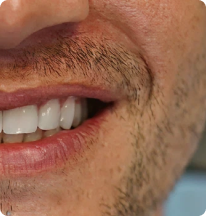
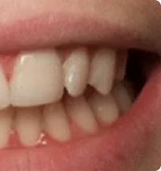
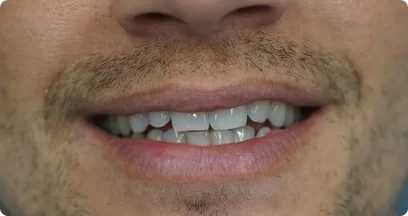
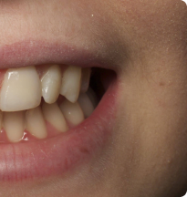

Home / Before & After
Before & After
Explore real smile transformations from patients treated across our Croydon, Brixton and Guildford practices. Drag through each case to see the difference our specialist orthodontists and cosmetic dentists make — from Invisalign and Damon braces to porcelain veneers and bonding.












Book a Free Consultation
See the smile that's
See the smile that's
waiting for you
Every transformation here started with a single, no-obligation consultation. Book yours at your nearest Orchard Orthodontics practice and our specialist team will map out the right treatment for your smile.
Book a Free Consultation